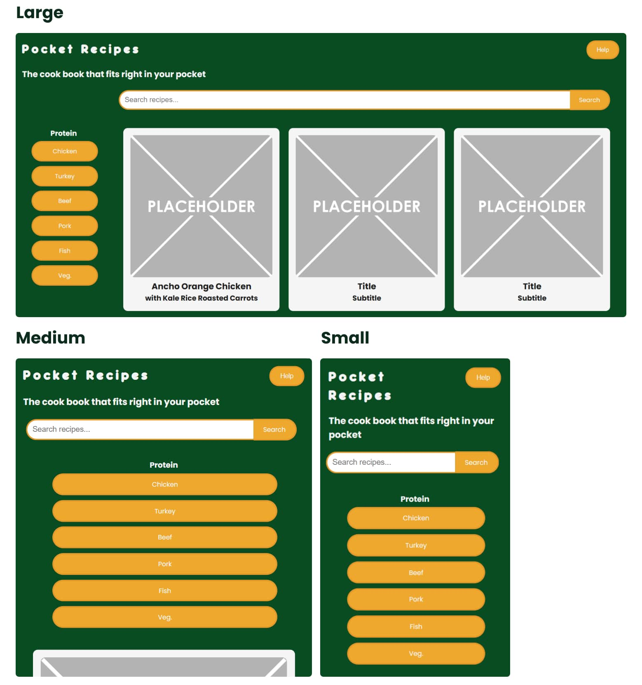
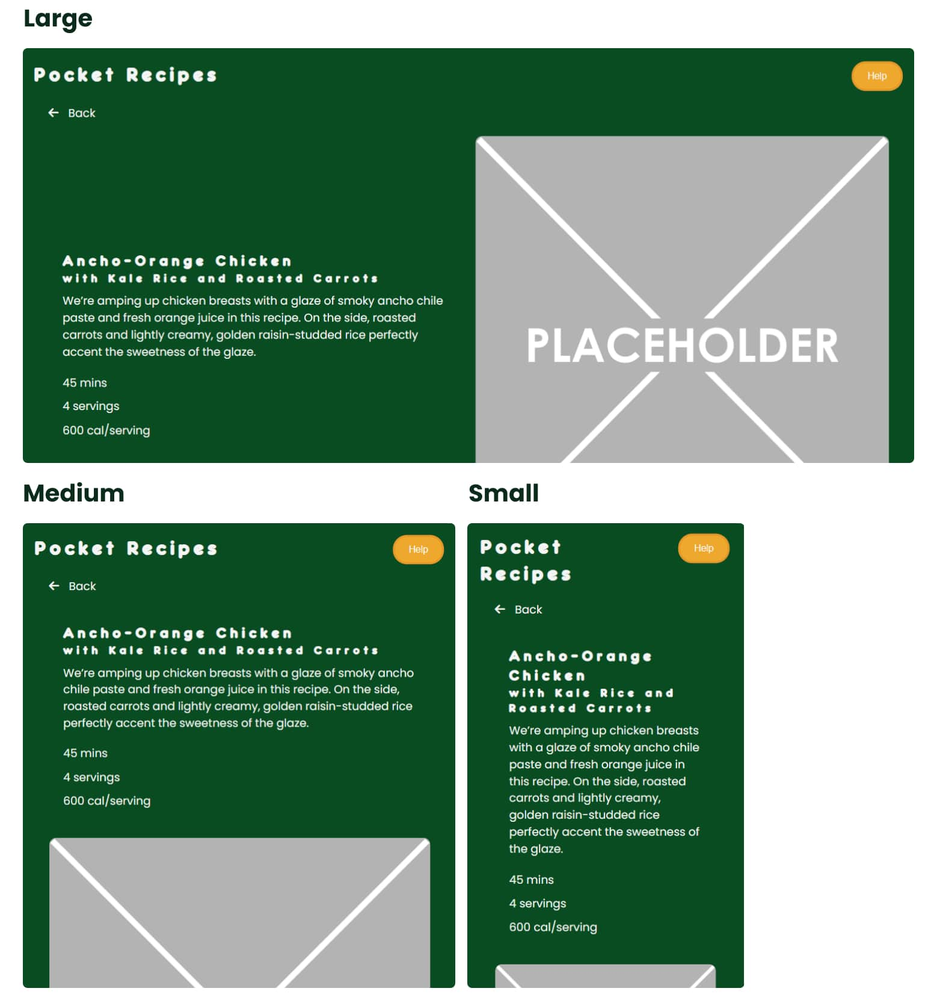
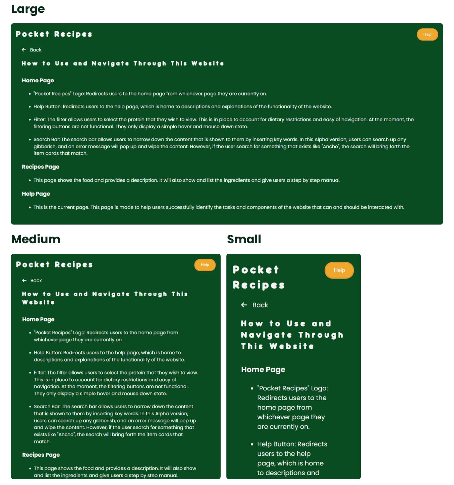
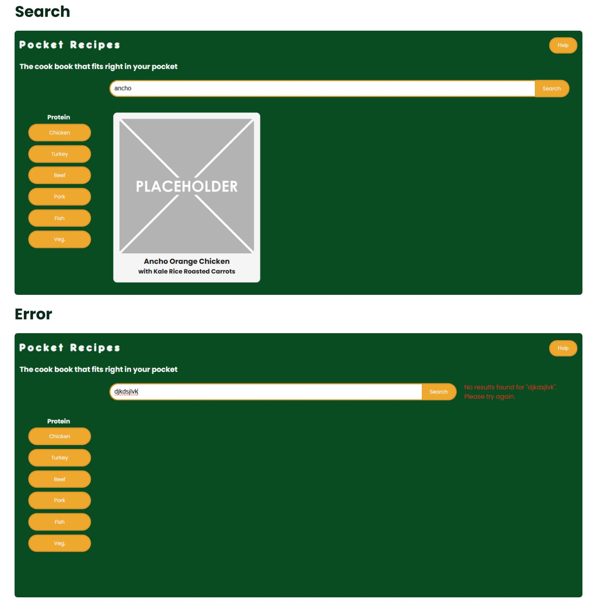

Pocket Recipes was a project created for my Scripting for Interactive Digital Media course. The primary objective of this project was to design and develop a cooking recipe website using HTML, CSS, JavaScript, and PHP. This project helped me understand how PHP can be used to streamline web development by minimizing the number of HTML pages that I needed to create. With PHP, I could dynamically pull information from a MySQL database and display it on the site, making the website more efficient and scalable.
Key features of my website included:
The project involved:
This was an independent project assigned as a practical exercise to deepen our understanding of how server-side scripting (PHP) works in tandem with client-side technologies. It also introduced us to database management concepts through phpMyAdmin.
Over the course of 10 weeks, the project was divided in four stages:
The challenge was to find a way to dynamically generate pages and manage recipe data without manual duplication as well as to provide a user interface for browsing, searching, and filtering recipes. All pages must be responsive.
Below are some screenshots of how the design changed from the Alpha to the Beta and to the Final. Images are listed in that order.
Alpha: The home screen used a two-column grid layout with the protein filter and recipe section. The recipe cards were displayed in a grid, and the number of columns reduced as the screen size shrank.
Beta: The layout shifted from a grid to using flexbox, which simplified the responsive design and reduced reliance on media queries. The protein filter was moved to the top to minimize negative space. Recipe cards wrapped around using flexbox as the screen got smaller.
Final: The layout remained the same as the beta version. The only significant change was to the CSS, which altered the style of the protein filter.
Overall, the transition to flexbox made the layout more flexible and easier to manage across different screen sizes, while the main structural changes involved the repositioning of the filter and refinements to the filter’s style.
Alpha: The detail page displayed content in two columns: one side for the image and the other for the text. The steps for the recipe were also shown in two columns, which switched to a single column as the screen size shrank.
Beta: The structure of the detail page remained the same as in the alpha version, with the same two-column layout. However, there were some CSS changes to improve styling, though the overall format stayed consistent.
Final: The detail page format remained unchanged from the beta version, with no significant structural modifications. The only update was further refinement of the CSS.
The overall design of the detail page remained largely consistent, with changes primarily focused on styling adjustments rather than structural updates.
Alpha: The help section was simple, with a text-heavy layout and minimal visuals. It was built using basic HTML and CSS.
Beta: The help section remained unchanged in structure but received a color scheme update for a fresh look. The content layout stayed text-based without significant modifications.
Final: The help section received additional styling by introducing a container for the information, which improved the organization and presentation of the text.
Overall, the changes to the help section focused on enhancing its visual appeal and structure through the introduction of color and layout refinements. The content remained primarily text-based throughout.
Alpha: The search bar was pill-shaped, allowing users to type words or letters to get results. If a user typed something that wasn’t in the system, an error message appeared to the right of the search bar, and the recipe cards disappeared.
Beta: The search bar's shape was changed to a square to experiment with a different look. The functionality remained the same, but with the integration of MySQL and PHP, the search could now filter not just by dish names but also by ingredients. If there were no matches, an error message would still appear, and the recipe cards would disappear.
Final: The search bar returned to its original pill shape, maintaining the functionality from the beta version. The error message stayed the same, but to address the negative space, a photo was added alongside the error message.
In summary, the search and error section underwent a change in the appearance of the search bar, shifting back and forth between pill and square shapes, while the functionality remained consistent. The error message layout was refined with the addition of a photo to improve visual balance.
Throughout the course of this project, I gained valuable experience in database integration and PHP. I’m pleased with the outcome and feel that I accomplished the goals I set. The alpha phase provided a solid foundation, allowing me to get started, while the beta phase pushed me to develop as much as possible for a minimum viable product.